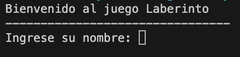
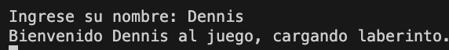
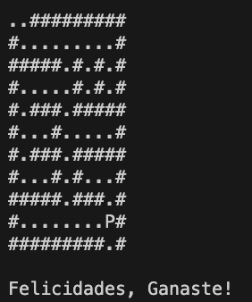

Detalle del Proyecto Python Laberinto
El proyecto integrador de Python consiste en un juego de texto de recorrer laberintos.
Este consistirá de laberintos representados por caracteres ASCII dónde # representará
una pared, . un pasillo y P el personaje.
Podrás moverte por el mapa usando las teclas ↑ ↓ ← → de tu teclado.
Sigue estos sencillos pasos:
- Al ejectuar el script se te mostrara un mensaje de bienvenida en consola, acontinuacion digita tu nombre.

- Seguido generara un saludo personalizado seguido de una breve espera de 3000 milisegundos mientras carga el
laberinto.

-
Finalmente Cargara el laberinto donde P seras tu y te moveras entre los puntos hasta
encontrar
la salida del laberinto, cuando esto ocurra se mostrara un mensaje de felicitaciones y finalizara el
programa.

Regreso a la pagina principal